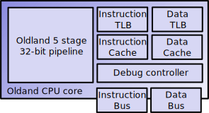
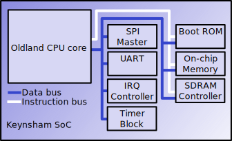

Introduction
Oldland is a 32-bit RISC CPU targeted at FPGAs. The main features are: 
- 5 stage load/store pipeline.
- 16 general purpose registers.
- N-way set-associative blocking instruction/data caches
- Software managed instruction/data TLBs with 4KB page size.
- JTAG debug controller for execution control and state modification/inspection.
- Exception table for interrupts, data/instruction aborts, illegal instruction and software interrupts along with separate ITLB/DTLB miss handlers.
- User and supervisor modes.
Keynsham is a SoC using Oldland as the core and has a number of peripherals: 
- 32MB SDR SDRAM controller.
- SPI master with configurable number of chip selects.
- On-chip bootrom.
- On-chip memory.
- Programmable timers.
- Interrupt controller.
- UART.
- SPI master.
There is a C model along with Icarus and Verilator RTL simulations. The Keynsham SoC can be synthesized to run on a Terasic DE0 Nano. There are ports of binutils, gcc, newlib, u-boot and RTEMS available.
The Terasic DE0-nano board using an Altera Cyclone IV is the supported board running at ~75MHz on slow silicon @85°C.
Documentation
- Instruction set
- Keynsham SoC configuration
- Architecture
- JTAG protocol
- How to simulate
- Memory busses
- TLBs
- SPI master
- Boot process
Testing
- Clone oldland-toolchain and build with:
git clone https://github.com/jamieiles/oldland-toolchain.git
cd oldland-toolchain
./build-oldland-elf
. oldland-toolchain-env- Clone oldland-cpu and build with:
git clone https://github.com/jamieiles/oldland-cpu.git
cd oldland-cpu
mkdir BUILD
cd BUILD
cmake -DCMAKE_ISNTALL_PREFIX:PATH=INSTALL_PREFIX ..
make all install-
Add
${INSTALL_PREFIX}/binto your path. -
Run
oldland-testto run the self-tests.
Running On Hardware
Build the FPGA image in Quartus and load it onto the device. Run oldland-jtagd on the development machine, oldland-debug can then connect to the CPU over the virtual JTAG.
Licensing
This project is currently licensed under GPLv2 except for oldland-jtagd which is under the Apache License v2.0.